En este tutorial usted aprenderá a:
-
Hacer regiones con las figuras del radio walkie-talkie.
-
Recopilar las regiones en una combinación de montaje.
-
Asignar propiedades de los materiales a las regiones.
-
Agregar componentes internos al radio.
-
Crear modelos especiales del radio.
-
Redefinir la estructura del radio.
En el tutorial 2, usted creó las formas básicas de un radio walkie-talkie para adquirir experiencia en la visualización de los objetos. Ahora volverá a trabajar sobre el radio para que se vea más realista al tiempo que aprende técnicas y estructuras lógicas en el modelado. Cuando haya terminado, su radio deberá verse como la siguiente imagen:
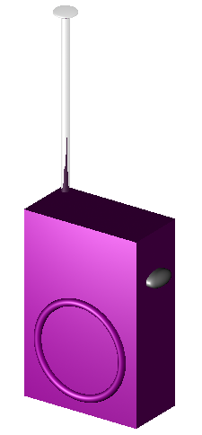
Hacer regiones con las figuras
Abra la base de datos radio.g que creó en el tutorial 2. En el línea de comandos utilice el comando ls para listar todos los contenidos de su radio. Deberá decir lo siguiente:
ant.s btn.s knob.s body.s btn2.s spkr.s
En realidad, esta lista no contiene piezas del modelo de un radio, sino que es una colección de formas (que se reconocen mediante el sufijo .s) que: (1) no tienen propiedades de los materiales, y por lo tanto (2) no ocupan lugar en el espacio.
|
Note
|
Recuerde, que en MGED ninguna figura se transforma verdaderamente en un objeto hasta que esté incluida en una región que, por definición, es un objeto o colección de objetos que tienen un tipo de material en común. |
Primero deberá identificar las partes principales del radio para poder definir correctamente las regiones. Hasta ahora, las opciones son bastante simples. El radio consiste básicamente en (1) un cuerpo que alberga el altavoz y todas las piezas internas, (2) una antena, (3) una perilla de control de volumen, y (4) un botón para hablar. Estas deben ser nuestras cuatro regiones.
La mayoría de estas formas fueron bastante sencillas de crear, cada una consiste en una o dos formas primitivas. Sin embargo, si pensamos en el radio como un objeto del mundo real, el cuerpo del radio es en realidad más complejo que una simple caja sólida con algunas formas sujetas a su superficie. Por lo tanto, habrá que trabajar más las figuras, comenzando por el componente principal del radio: el cuerpo.
El cuerpo del radio
Si lo pensamos bien, el cuerpo de un radio es en realidad una caja hueca. Por lo tanto, lo primero que tenemos que hacer es vaciar el interior de la caja para hacer espacio para los componentes internos. Utilice el comando inside para crear una forma y nómbrela cavity.s: inside body.s cavity.s 1 1 1 1 1 1[Enter] Ahora, haga una región llamada case.r y defínala como lo que queda de body.s después de haber substraído cavity.s. El comando debería ser: r case.r u body.s - cavity.s[Enter]
|
Note
|
Recuerde que el comando inside fue creado originalmente para ahuecar objetos tales como tanques de gasolina y cajas, sin embargo, también se puede utilizar para crear cualquier nueva forma que tenga alguna relación con otra forma pre-existente. |
Una vez terminada la carcaza, podemos proceder al corte de varios agujeros que atraviesen la estructura para posicionar la antena, el control de volumen, y la el botón de habla. Para ello, hay que restarle las tres formas a la carcaza de la siguiente manera: r case.r - ant.s - knob.s - btn.s[Enter] Para finalizar deberá "pegar" el borde alrededor del parlante en la parte frontal de la carcaza. Tipee entonces: r case.r u spkr.s[Enter]
Nuestro cuerpo está ahora terminado. Puede que un modelador con experiencia combine las últimas tres funciones booleanas en un solo comando de la siguiente manera: r case.r u body.s - cavity.s - ant.s - knob.s - btn.s u spkr.s[Enter] Si generara el trazado de rayos en este punto, debería aparecerle en la ventana gráfica una imagen similar a esta:
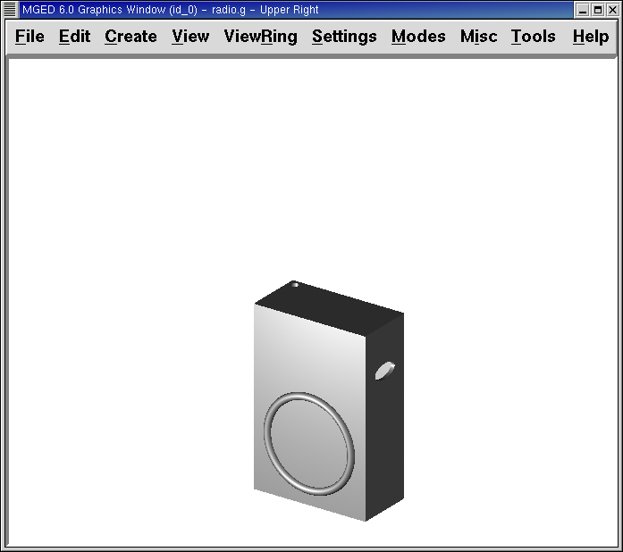
La siguiente tarea consiste en completar los orificios con los componentes correspondientes.
|
Note
|
Repaso de prioridad de operadores El orden en que estas primitivas fueron unidas y substraídas es importante. La última unión generada fue de spkr.s, por lo tanto, todas las substracciones se aplicaron solamente a body.s. Las reglas de prioridad de operadores booleanos indican que la substracción y la intersección tienen una prioridad mayor que la unión (lo que significa que se llevan a cabo primero). Aunque la operación siguiente no se encuentra en la sintaxis propia de MGED, los paréntesis ayudan a entender los operadores que preceden y anteceden en el último comando: r case.r u (body.s - cavity.s - ant.s - knob.s - btn.s) u (spkr.s) [Enter] Otra opción hubiera sido unir spkr.s antes de body.s como en el siguiente ejemplo: r case.r u spkr.s u body.s - cavity.s - ant.s - knob.s - btn.s[Enter] El siguiente es un ejemplo de lo que hubiera pasado si se hubiera aplicado el comando: r case.r u body.s u spkr.s - cavity.s - ant.s - knob.s - btn.s[Enter] En este último caso, la prioridad de los operadores habría causado que el programa substraiga cavity.s, ant.s, knob.s y btn.s de spkr.s. Nada habría sido restado de body.s. Por lo tanto, los agujeros de la carcaza no habrían sido creados. Restar cavity.s, ant.s, knob.s y btn.s de spkr.s no habría producido ningún efecto aparente debido a que no se superponen con el volumen de spkr.s. |
Las demás regiones
Hacer el botón para hablar es más sencillo que hacer la carcaza. El botón consiste en la unión de dos formas primitivas. Para convertirlos en una región, tipee: r button.r u btn.s u btn2.s[Enter]
El control de volumen y la antena son aún más sencillos. Son sólo una forma primitiva y su región se hace con los comandos: r knob.r u knob.s[Enter] r ant.r u ant.s[Enter]
Recopilar las regiones en una combinación de montaje
Ahora vamos a tomar todas las regiones que hemos hecho hasta ahora y reunirlas en combinación de montaje llamada radio.c para que podamos mantener todas las piezas juntas. Hay varias maneras de hacer esto. Una forma sería usar un método similar al que usamos para hacer las regiones: comb radio.c u case.r u button.r u knob.r u ant.r[Enter]
Una forma más corta sería utilizar el comando g (group > grupo): g radio.c case.r button.r knob.r ant.r[Enter] A diferencia del comando comb, el comando g supone que todos los elementos especificados se unirán en uno, por lo que no es necesario especificar operadores booleanos.
La mejor opción incluiría el uso del comodín .r para especificar rápida y sencillamente todas las regiones de la base de datos: *g radio.c *.r[Enter] Si ahora viéramos el árbol de radio.c, debemos obtener el siguiente resultado en la ventana de comandos:
radio.c/ u case.r/R u body.s - cavity.s - ant.s - knob.s - btn.s u spkr.s u button.r/R u btn.s u btn2.s u knob.r/R u knob.s u ant.r/R u ant.s
Asignar propiedades de los materiales a las regiones
Hasta ahora, los objetos que hemos creado no tienen otras propiedades más que el plástico gris que MGED asigna en forma predeterminada a cualquier objeto sin propiedades especificas. Mejore su diseño mediante la asignación de otras propiedades de los materiales a los componentes.
Dele a la antena un aspecto realista. Abra el editor de combinaciones, seleccione ant.r en el menú desplegable de nombres, y mirror (espejo) en el menú desplegable de shader (sombra). Luego aplique los cambios.
Dejaremos que los otros componentes queden con el sombreado de plástico predeterminado, pero vamos a asignarles diferentes colores. Con el editor de combinaciones todavía abierto, seleccione case.r en el menú desplegable de nombre, seleccione la opción color magenta en el de color y aplique los cambios. Utilice el mismo método para asignar al control de volumen (knob.r) un color azul. Al botón de habla (button.r), vamos a mantenerlo en gris dejando los valores predeterminados. El diseño debería ser similar al siguiente una vez que genere el Raytrace en modo Underlay:
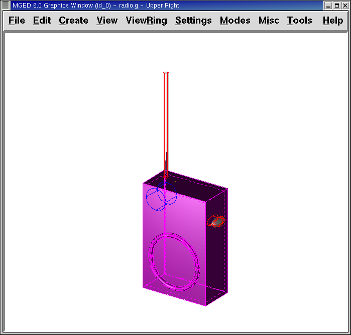
Al ver el radio, observará que la antena luce como un tubo. Falta añadirle una pequeña tapa en el extremo para que es pueda subir y bajar fácilmente. Para crearla, utilice un elipsoide, nómbrelo ant2.s, y únalo al extreño de la antena de la siguiente manera: in ant2.s ell1 2 2 94 0 0 1 3[Enter] r ant.r u ant2.s[Enter]
Agregando componentes internos
El radio luce cada vez más realista, sin embargo, todavía es sólo un cascarón vacío. Vamos a continuar con la creación de una placa de circuito que irá dentro de la carcaza. Para ello, escriba: in board.s rpp 3 4 1 31 1 47[Enter] r board.r u board.s[Enter]
Dele a la placa un color verde semi-brillante. La forma más sencilla de hacer esto es a través del editor de combinaciones, pero esta vez hemos de enfocarnos en la línea de comandos. Tipee: mater board.r "plastic sh=4" 0 198 0 1[Enter] Este comando le dice a MGED que:
mater |
board.r |
"plastic sh=4" |
0 198 0 |
1 |
Asigne propiedades de los materiales a… |
la región board.r. |
Aplique el sombreado de plástico con un valor 4 de brillo |
Le otorgue un color verde |
Heredando el tipo de color del material |
Finalmente, agruparemos la placa con el resto de los componentes de radio.c de la siguiente manera: g radio.c board.r[Enter] El radio deberá verse como esta imagen:
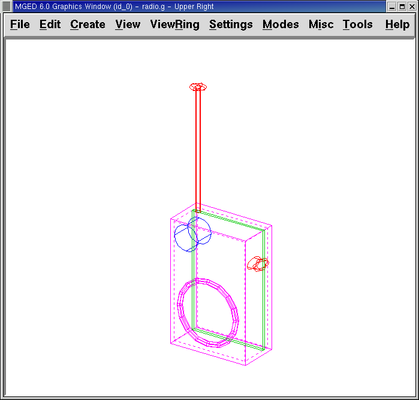
Además, el árbol de radio.c debería ser:
radio.c/ u case.r/R u body.s - cavity.s - ant.s - knob.s - btn.s u spkr.s u button.r/R u btn.s u btn2.s u knob.r/R u knob.s u ant.r/R u ant.s u ant2.s u board.r/R u board.s
Hacer modelos especiales del radio
Si tuviesemos que generar el trazado de rayos en esta instancia, la placa de circuitos quedaría imposibilitada de ser vista porque se encuentra dentro de la carcaza. Para que la placa esté visible tendría que crear un modelo especial del radio.
Hay dos formas comunes de hacerlo: vista transparente y corte transversal. Cada método tiene sus ventajas y desventajas. Con la vista transparente, las operaciones booleanas no cambian, pero algunas de las propiedades de los materiales de la carcaza se alteran para ver mejor las partes internas del modelo. Con la vista de corte, las propiedades de los materiales no cambian, pero se modifican algunas de las operaciones booleanas para eliminar las partes del modelo que están obstruyendo la visión de las partes que se encuentran detrás.
Diferentes maneras de hacer modelos especiales
Un punto importante a señalar aquí es que los puntos de vista transparente y corte son modelos especiales. Son de naturaleza similar a la que un fabricante de artículos podría hacer para propósitos especiales. Por ejemplo, un fabricante de automóviles hace automóviles de uso cotidiano, pero también hace versiones modificadas para mostrar en ciertos eventos. Los paneles de la carrocería pueden ser reemplazado con un material transparente o ser parcialmente seccionados para revelar los componentes internos.
Las buenas prácticas de modelado siguen el mismo patrón. El modelo actual de un objeto no debería tener que cambiarse a fin de crear una vista especial del mismo, sino que debería crearse una nueva versión modificada del objeto. De esta manera, el modelador no tendrá que preocuparse por devolver el modelo al estado original después de su uso para fines especiales, y podrá mantener el modelo en pantalla para su uso posterior.
Hay dos métodos comunes para hacer estos modelos especiales: En primer lugar, el modelador puede copiar el original y sustituir los componentes con las versiones modificadas. En segundo lugar, el diseñador puede crear nuevas piezas, únicas a partir de cero y construir el elemento modificado. La elección del método es una cuestión personal y generalmente se determina por la magnitud de las modificaciones que se hecho y la complejidad del objeto original.
Vista transparente
Hacer un radio especial con una carcaza transparente, probablemente sería la forma más fácil de ver la placa de circuitos de adentro. Todo lo que tenemos que hacer es una copia de nuestra carcaza actual y modificar sus propiedades materiales. Vamos a llamar a la carcaza especial case_clear.r. Tipee: cp case.r case_clear.r[Enter] Ahora podemos usar el editor de combinaciones para establecer las propiedades del material sin afectar el "maestro" del diseño del radio. Una vez hecho esto, podemos combinar esta carcaza modificada con los demás componentes que no han sufrido cambios y agruparlos como un nuevo radio especial llamado radio_clear.c.
Para establecer las propiedades del material de case_clear.r, seleccione Plastic (Plástico) del menú desplegable de Shader (Sombreado) en el editor de combinaciones (aunque éste es el sombreado que se utiliza de forma predeterminada, queremos explícitamente seleccionarlo con el fin de cambiar uno de sus valores.) Ahora cambie la transparencia de la carcaza a un valor de 0,8. Aplique el cambio y cierre el editor.
Finalmente, cree la combinación del radio especial tipeando: g radio_clear.c case_clear.r button.r knob.r ant.r board.r[Enter] y luego utilice el comando Blast para visualizarlo: B radio_clear.c[Enter]
Genere el Raytrace de su diseño para ver los efectos resultantes. La nueva carcaza traslúcida deberá verse similar a la siguiente:
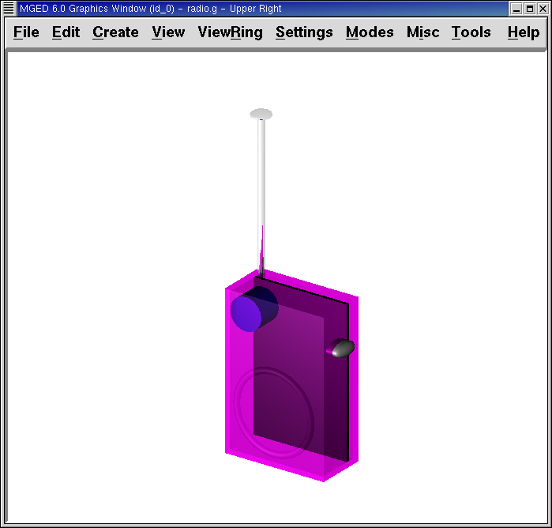
Como se muestra en el siguiente diagrama de árbol, la estructura de radio_clear.c no es muy diferente a la de radio.c. La única diferencia es que case.c ha sido sustituido por case_clear.c.
radio_clear.c/ u case_clear.r/R u body.s - cavity.s - ant.s - knob.s - btn.s u spkr.s u button.r/R u btn.s u btn2.s u knob.r/R u knob.s u ant.r/R u ant.s u ant2.s u board.r/R u board.s
|
Note
|
Observe en la figura anterior que el color elegido para la carcaza transparente influye en la representación de los objetos internos. A pesar de que hizo la placa de circuito de color verde, el efecto del filtro de la carcaza traslúcida magenta no permite que la luz verde entre o salga, por lo que la placa se ve de color violeta. En esta ocasión, no tendremos problemas con eso, pero si la precisión en el color es importante en un modelo, el diseñador debe recordar seleccionar un color neutro (como blanco o gris claro) para el objeto transparente. |
Vista en corte
Otra manera de hacer visibles los componentes internos del radio es crear una vista en corte. Aunque es un poco más complejo para hacer que la vista transparente, esta vista ofrece una forma particularmente interesante de ver la estructura.
Hay varias maneras de hacer la vista de corte transversal. Probablemente la manera más fácil sea utilizar el método "motosierra" para cortar parte de la radio y revelar lo que hay dentro.
Para ello, cree una arb8 y nómbrelo cutaway.s, el cual utilizará para cortar la esquina frontal del radio. Debido a que esta es una forma de corte (es decir, que simplemente se usa para borrar una porción de otra forma y en realidad no podrá ser visto luego), las dimensiones de la arb8 no son críticos. La única preocupación es que cutaway.s sea tan largo como el corte a hacer a la carcaza para que pueda eliminar por completo una esquina de la misma.
Utilice los diferentes puntos de vista, especialmente la vista superior, para alinear la figura de corte cutaway.s de modo que los ángulos corten diagonalmente la parte superior del radio (como se muestra en la representación siguiente). Cuando haya alineado la figura tal como usted desea, cree la combinación radio_cutaway.c uniendo radio.c y substrayendo la forma (cutaway.s) que cubre lo que desea ver (board.r): comb radio_cutaway.c u radio.c - cutaway.s[Enter]
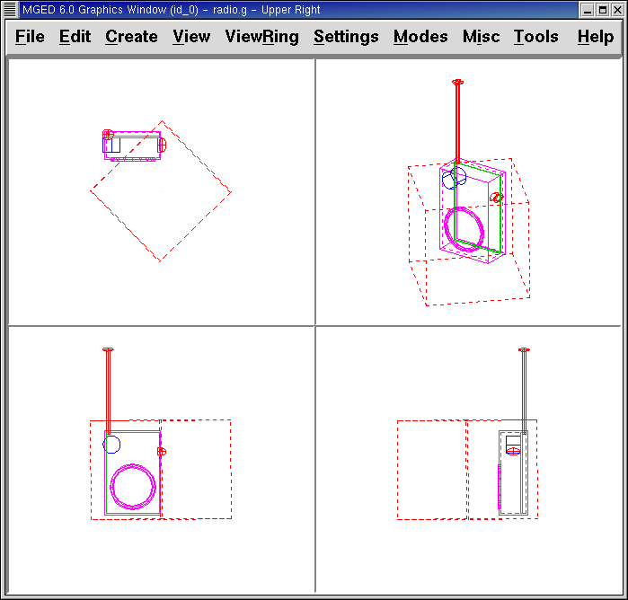
Utilice el comando Blast sobre la combinación radio_cutaway.c para ver el diseño y genere el Raytrace. Dependiendo de cómo arb8 intersecta el radio, el corte debería ser similar al siguiente:
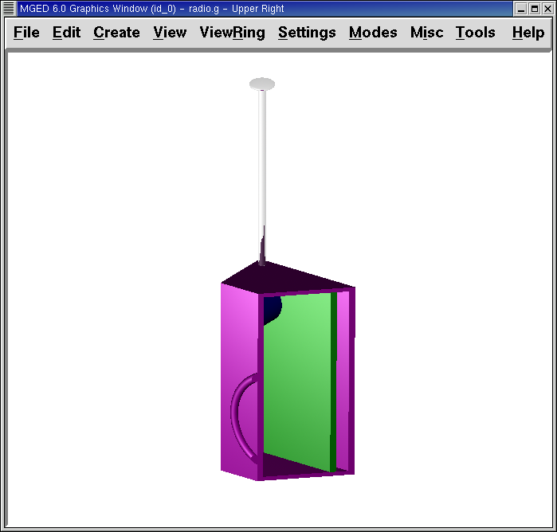
Observe en las figuras anteriores que cutaway.s elimina todo lo que se solapa (incluyendo parte de la placa de circuito). Esto está bien si sólo quiero ver dentro de la carcaza. Sin embargo, si queremos ver todos los circuitos y cualquier otro componente solapado por cutaway.s (por ejemplo, button.r), tendría que ajustar las operaciones booleanas para que el recorte substraiga sólo de la carcaza.
Para ello, tiene básicamente dos opciones: (1) utilizar cutaway.s para que sólo substraiga de case.r, o (2) utilizar cutaway.s para que substraiga de body.s y spkr.s, los dos componentes que conforman case.r. Si bien ambas opciones producirían el mismo efecto, el primer método sólo requiere una resta, mientras que el segundo proporciona un mayor control permitiendo que el usuario seleccione los componentes que serán seccionados durante el corte en forma individualizada.
Tómese un minuto y compare los árboles de ambos cortes. Preste especial atención a la posición de cutaway.s en las diferentes estructuras. También tenga en cuenta que cuando cutaway.s se substrae de una región o de una combinación, el nombre de esa región o combinación se ha modificado. La explicación de esto se remonta al inicio cuando se explicaron los usos de los modelos especiales. Recuerde que nuestro propósito es crear un nuevo modelo para un uso específico, no cambiar el modelo existente. Por lo tanto, tenemos que cambiar el nombre de una región o de una combinación que haya sufrido cualquier modificación en los componentes o en su estructura. Si no lo hacemos, el modelo original también se modificará.
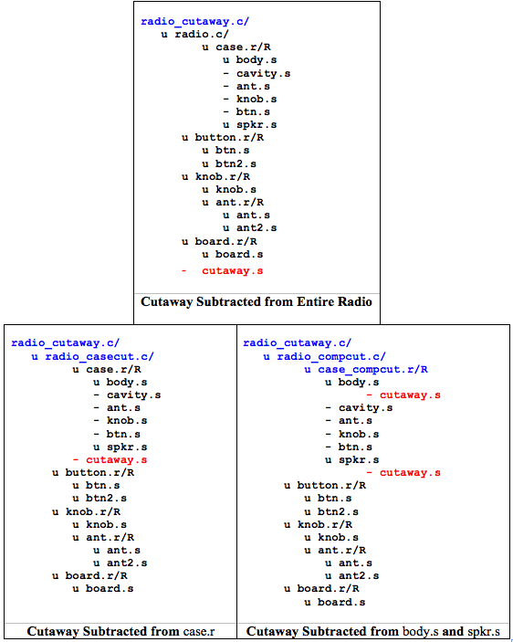
Redefiniendo la estructura del radio
Como las formas se agregan a un diseño, el diseñador a menudo encuentra que la estructura o la asociación de los componentes tiene que cambiar. Haga una pausa en este punto y considere cómo se estructura el radio. Si bien hay muchas maneras de estructurar un modelo, dos categorías comunes de modelación son: ubicación y funcionalidad. Para este radio, se ha agrupado todo junto en la categoría general de "Radio", como se muestra en la siguiente imagen:
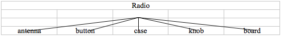
Si quisiéramos clasificar nuestros componentes de acuerdo a la ubicación podemos estructurar el modelo de la siguiente manera:
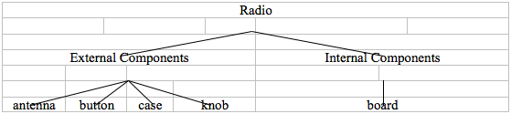
Si quisiera definir los componentes de acuerdo a la funcionalidad, debería estructurarlos de otra manera. Por ejemplo, para reparar una radio real, queremos abrir la carcaza, sacar la placa de circuito, arreglarlo, y volver a ponerla. Pero cuando saque la placa, el mando y el botón deberían estar unidos de alguna forma a ella, ya que se relacionan en su funciones. En consecuencia, la estructura debe ser modificada como se muestra en el siguiente gráfico para asociar el mando y el botón con la tarjeta de circuitos.
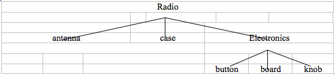
Para llevar a cabo esta reestructuración de acuerdo a la funcionalidad, cree una combinación de montaje llamada electronics.c para mantener estos componentes agrupados. Tipee entonces: g electronics.c board.r knob.r button.r[Enter] Por supuesto, ahora tenemos que quitar board.r, knob.r y button.r de la combinación de ensamble radio.c de modo que cuando electronics.c se agrega a radio.c, no tenga el mando y el botón incluido dos veces en el modelo. Para ello, utilice el comando rm (remove > borrar): rm radio.c board.r knob.r button.r[Enter] y agrupe ambas combinaciones: g radio.c electronics.c[Enter]
Ahora el árbol de radio.c debería ser:
radio.c/ u case.r/R u body.s - cavity.s - ant.s - knob.s - btn.s u spkr.s u ant.r/R u ant.s u ant2.s u electronics.c/ u board.r/R u board.s u knob.r/R u knob.s u button.r/R u btn.s u btn2.s
Ahora pruebe rehacer la vista en corte, pero recortando sólo el material de la carcaza, dejando a la vista todos los demás componentes.
En primer lugar, debe deshacerse del radio_cutaway.c que se basaba en la estructura anterior. Para ello, tipee: kill radio_cutaway.c[Enter] y luego rehaga la combinación tipeando: comb radio_cutaway.c u case.r - cutaway.s u electronics.c u ant.r[Enter] Ahora, cuando redibuje utilizando el comando Blast y genere el trazado de rayos de radio_cutaway.c nuevamente, debería ver lo siguiente:
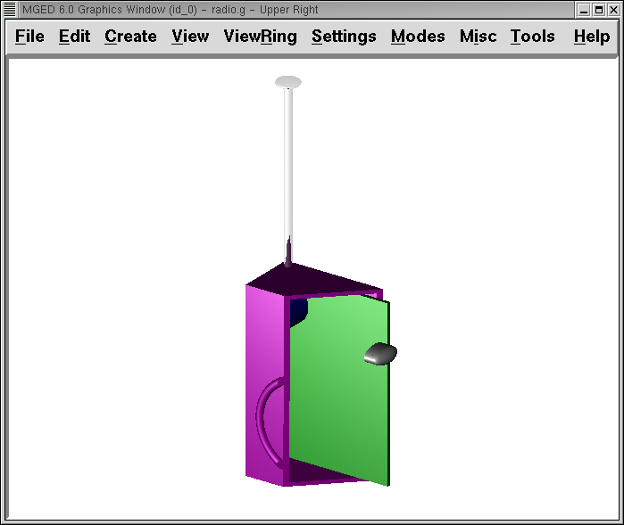
Repasemos…
En este tutorial usted aprendió a:
-
Hacer regiones con las figuras de la radio walkie-talkie.
-
Recopilar las regiones en una combinación de montaje.
-
Asignar propiedades de los materiales a las regiones.
-
Agregar componentes internos a la radio.
-
Crear modelos especiales de la radio.
-
Redefinir la estructura de la radio.